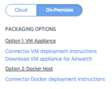

Open topic with navigation
Choose Deployment Packaging
Choose which deployment packaging option to use for Connector On-Premises:
- RedHat Linux and Docker on your own machine (virtual or physical)
- Appthority's virtual machine appliance (OVA VM pre-packaged with the necessary software)
In order to install or update Connector, you will need your Appthority org credentials.
Note: For the Appliance option, the Docker host and virtual machine will be configured by default with 4GB RAM, 50GB of storage, and 1 vCPU for up to 50,000 devices. We recommend that you do not set these lower than the default.
Follow the guidelines for the packaging option you want to use.
To use Appthority's Virtual Machine
- To use the prepackaged Virtual Machine Appliance:
Download the OVA from the 'Download VM appliance' link on the Admin > Organization tab and configure. This will install a virtual machine with RedHat Linux and Docker.
Your system admin may need the hash information in case of failed download: MD5 Checksum: a0239b2c2ecabe68070e9117c9684151
To install Connector on your own environment
